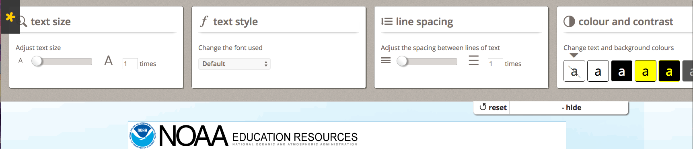
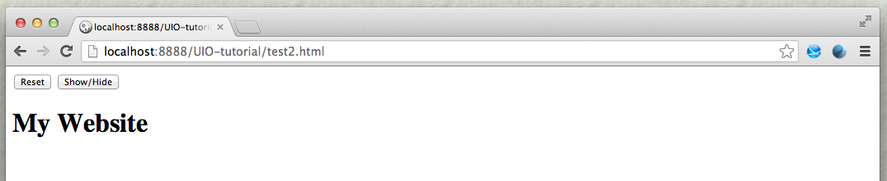
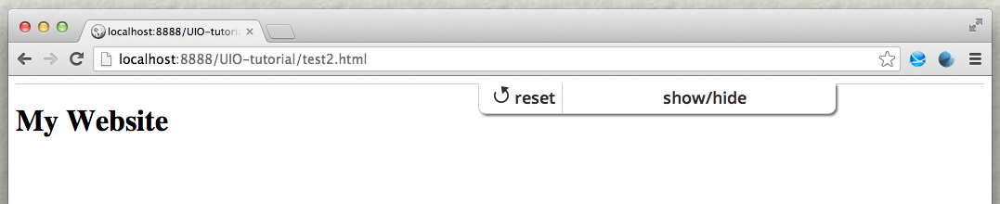
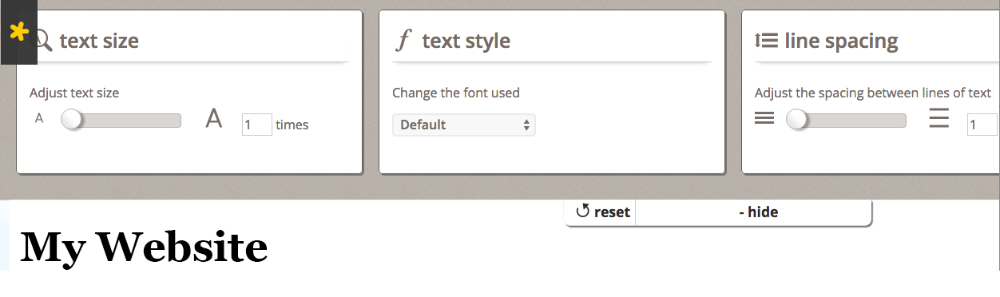

The User Interface Options (UI Options) component allows users to transform the presentation of the user interface and content resources so that they are personalized to the individual user's needs.
UI Options does three things:
- places a preferences editor dialog with a set of six panels in a collapsible panel at the top of the page, accessible through a button in the upper right corner of the page;
- instantiates a cookie-based Settings Store for storing the user's preferences; and
- acts upon the user's preferences.

This tutorial assumes that:
- you are already familiar with HTML, Javascript and CSS,
- you are familiar with what the UI Options preferences editor is and does, and
- now you just want to know how to add it to your website.
Scenario
You're putting together a website that you know will have a diverse audience. You'd like to allow your visitors to customize the presentation of the site to their individual needs, by enlarging the text or increasing the visual contrast, for example. This tutorial will show you how to add the Infusion UI Options component to your site.
These are the basic steps to add UI Options to your website:
- Download and install the Infusion library
- Prepare your page
- Add dependencies to the page
- Add the UI Options component
The rest of this tutorial will explain each of these steps in detail.
Download and install the Infusion library
- Get the current source code from github as a ZIP file
- Unpack the zip file you just downloaded and cd into the "infusion-master" folder that results.
- If necessary install Node.js and Grunt
npm install -g grunt-cli. - Make your own custom build by running the
gruntcommand in the Terminal. See the README.md file for instructions on how to make a custom build of Infusion. - The grunt command will create a zip file in the products folder. Unzip that file and move the resulting
infusionfolder somewhere convenient for your development purposes, likely in alibfolder in your site hierarchy. - This
infusionwill include a single file containing all of the JavaScript you need:infusion-custom.js. You will link to this file in the headers of your HTML files.
Prepare your page
The Sliding Panel
The UI Options component includes HTML templates for all the controls, so you don't need to create any HTML for them. You only need to add a small amount of markup to the top of your page to tell UI Options where to render itself.
Add the following markup as the first thing within your <body> tag:
<div class="flc-prefsEditor-separatedPanel fl-prefsEditor-separatedPanel">
<!-- This is the div that will contain the Preference Editor component -->
<div class="flc-slidingPanel-panel flc-prefsEditor-iframe"></div>
<!-- This div is for the sliding panel that shows and hides the Preference Editor controls -->
<div class="fl-panelBar">
<span class="fl-prefsEditor-buttons">
<button id="reset" class="flc-prefsEditor-reset fl-prefsEditor-reset"><span class="fl-icon-undo"></span> Reset</button>
<button id="show-hide" class="flc-slidingPanel-toggleButton fl-prefsEditor-showHide"> Show/Hide</button>
</span>
</div>
</div>
The main <div> in this snippet contains two things:
- a
<div>where an iframe will be inserted, containing the Fat Panel UI Options controls, and - a
<div>where the sliding panel and button will be created.
The elements in this snippet all have particular class names attached to them, and it's important to keep them:
- the class names starting with
flc-are used to identify the elements to UI Options; - the class names starting with
fl-are used for visual styling.
If you open this page in your browser now, you'll only see the button in the upper left corner, since we haven't set up the CSS, and UI Options isn't present on the page yet:

The Table of Contents
One of the UI Options controls allows users to add a Table Of Contents to the top of the page. You need to add a placeholder <div> to your page for the Table Of Contents. It should have a class of "flc-toc-tocContainer" like this:
<div class="flc-toc-tocContainer"> </div>
Where exactly on your page you put this
Add dependencies to the page
- the CSS files, and
- the main Infusion JavaScript file,
infusion_custom.js.
In the header of your file, link to the CSS files with <link> tags (you may have to adjust the paths to reflect where you've saved the Infusion package).
<link rel="stylesheet" type="text/css" href="lib/infusion/src/lib/normalize/css/normalize.css" />
<link rel="stylesheet" type="text/css" href="lib/infusion/src/framework/core/css/fluid.css" />
<link rel="stylesheet" type="text/css" href="lib/infusion/src/framework/preferences/css/Enactors.css" />
<link rel="stylesheet" type="text/css" href="lib/infusion/src/framework/preferences/css/PrefsEditor.css" />
<link rel="stylesheet" type="text/css" href="lib/infusion/src/framework/preferences/css/SeparatedPanelPrefsEditor.css" />
We'll use the <script> tag to link to the Infusion library:
<!-- The Infusion Library -->
<script type="text/javascript" src="lib/infusion/infusion-custom.js"></script>
infusion-custom.js file is a concatenation of all of the required JavaScript files and will be minified (i.e. all of the whitespace removed) if you've built the minified version. If so, it might be difficult to debug with. If you want to be able to debug the code, you might want to choose the "source" version when you create your Infusion bundle.If you open this page in your browser now, you'll only see that the button has been styled differently: it is in the upper right corner and the font has been changed. You can also see the bar of the sliding panel. The button still doesn't do anything, since we still haven't added the UI Options component to the page.

Add the UI Options component
The simplest way to add the UI Options component to your page is using a <script> tag near the top of the page. We suggest placing it right before the UI Options markup created in Step 1.
Add the script block as shown below:
<body>
<script type="text/javascript">
$(document).ready(function () {
fluid.uiOptions.prefsEditor(".flc-prefsEditor-separatedPanel", {
tocTemplate: "lib/infusion/components/tableOfContents/html/TableOfContents.html",
terms: {
templatePrefix: "lib/infusion/framework/preferences/html",
messagePrefix: "lib/infusion/framework/preferences/messages"
}
});
})
</script>
<div class="flc-prefsEditor-separatedPanel fl-prefsEditor-separatedPanel">
...
</div>
<!-- the rest of your page here -->
</body>
This script calls the fluid.uiOptions.prefsEditor() function to create the component. The function takes two arguments:
- the selector of the container for the component, and
- an options object for configuring the component.
The selector for our UI Options will be the classname of the <div> we created in Step 1. In this markup, the selector is ".flc-prefsEditor-separatedPanel".
The options tell the component about two things:
- where to find the UI Options HTML templates included in Infusion: the
terms.templatePrefixoption, and - where to find the message bundles, the strings that will be used in the interface: the
terms.messagePrefixoption.
In the code above, the terms.messagePrefix option is referencing the default strings provided by the component.
Congratulations!
UI Options is now fully functional on your page. Now, when you load your page in your browser and click on the "Show Display Preferences" button, you will see the UI Options controls, as shon in the image below. If you adjust the controls, you will see your changes being applied to the page.
